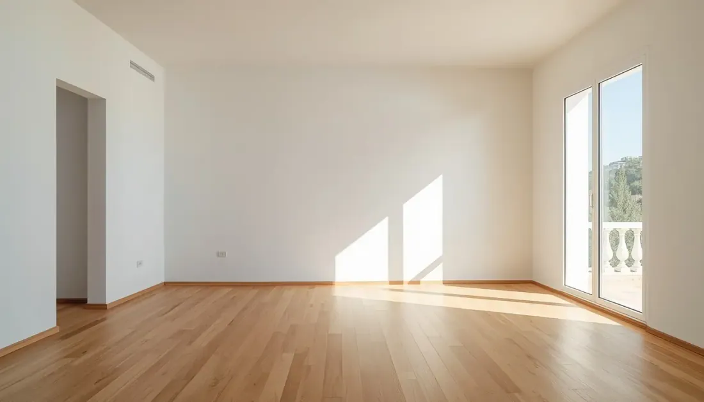
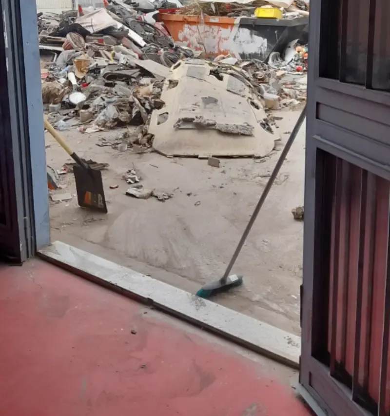

El moment en què un inquilí lliura les claus i el següent encara no ha signat el contracte és un dels més delicats en la gestió d'un pis de lloguer. Hi ha tràmits legals que no admeten improvisació, decisions sobre l'estat del pis que poden costar temps i diners, i una finestra d'oportunitat per preparar l'immoble correctament abans del nou arrendatari.
A Barcelona, el mercat de lloguer està en màxims històrics de demanda. Amb una renda mitjana de 1.654€ mensuals al Q3 de 2025, la ciutat té la major pressió de demanda de tota Espanya. Això facilita trobar nou inquilí, però no resol els errors de gestió que es cometen en el procés de canvi: documentació deficient per a la fiança, objectes abandonats sense protocol, o un pis que es posa al mercat sense estar en condicions.
Aquesta guia cobreix tot el que necessita saber: des dels tràmits legals fins a la preparació pràctica del pis, passant per l'INCASÒL, la Llei d'Arrendaments Urbans i la regulació de zones tensionades.
El context legal que tot propietari barceloní ha de conèixer el 2026
Abans de parlar de neteja, reparacions o fotografies, cal entendre el marc legal en què es mou qualsevol propietari a Barcelona el 2026. Hi ha tres normatives que afecten directament el procés de canvi d'inquilins:
La Llei d'Arrendaments Urbans (LAU)
La Llei 29/1994 d'Arrendaments Urbans, modificada per la Llei d'Habitatge 12/2023, estableix les regles bàsiques del lloguer a Espanya. Els punts més rellevants per a un canvi d'inquilins:
- Durada mínima: 5 anys per a propietaris persona física, 7 per a persones jurídiques. Si l'inquilí vol marxar abans, ha d'avisar amb 30 dies d'antelació (després d'almenys 6 mesos de contracte)
- Preavís del propietari: per no renovar el contracte al venciment, el propietari ha d'avisar amb 4 mesos d'antelació; l'inquilí amb 2 mesos
- Fiança: una mensualitat obligatòria per a habitatges habituals. El propietari té 1 mes des del lliurament de claus per tornar-la. Passat aquest termini, meritarà interessos
- Reparacions de conservació: el propietari està obligat a mantenir l'habitatge en condicions d'habitabilitat. Les petites reparacions per ús habitual són de l'inquilí
La Llei d'Habitatge 12/2023 i les zones tensionades
Barcelona i la pràctica totalitat de la seva àrea metropolitana estan declarades com a zona de mercat residencial tensionat. Això té conseqüències directes en el preu del nou contracte:
- Petits propietaris (menys de 5 immobles): el preu del nou contracte no pot superar la renda del contracte anterior, llevat que s'actualitzi segons l'Índex de Referència d'Arrendaments d'Habitatge (IRAV). Consulteu l'índex a habitatge.gencat.cat
- Grans tenidors (5 o més immobles en zones tensionades): el preu no pot superar l'índex de preus de referència publicat pel Ministeri d'Habitatge
- Excepció: si s'han realitzat obres de millora en els darrers dos anys que representin almenys el 10% del valor de l'immoble, es pot incrementar la renda fins a un 10%
Pot consultar si el seu municipi està declarat zona tensionada al portal del Ministeri d'Habitatge: serpavi.mivau.gob.es i al portal de la Generalitat de Catalunya: habitatge.gencat.cat. Barcelona ciutat i els seus municipis veïns estan inclosos.
La fiança i l'INCASÒL a Catalunya
A Catalunya, el propietari està obligat per la Llei 13/1996 a dipositar la fiança a l'INCASÒL (Institut Català del Sòl) en un termini màxim de dos mesos des de la signatura del contracte. En finalitzar el contracte, ha de sol·licitar la devolució a l'INCASÒL presentant el rebut de dipòsit i la documentació d'extinció. L'INCASÒL té 21 dies per tornar l'import al propietari. A continuació, el propietari té 30 dies des del lliurament de claus per tornar el saldo a l'inquilí, deduint els imports justificats per danys o deutes.

Guia pas a pas: de l'avís de sortida al nou contracte
-
Abans de la sortida: documentar l'estat actual del pis
Abans que l'inquilí lliuri les claus, és fonamental tenir documentat l'estat del pis a l'inici del contracte. Si no es va fer acta d'entrada, aquest moment és l'última oportunitat per acordar amb l'inquilí quin és l'estat del qual es parteix. Sense documentació, qualsevol reclamació posterior és molt difícil de sostenir.
- Revisar el contracte: data exacta de venciment i preavís donat per ambdues parts
- Verificar que l'inquilí ha avisat en el termini correcte (2 mesos abans del venciment)
- Recordar a l'inquilí les seves obligacions: lliurar el pis net, en l'estat acordat, i sense objectes personals
- Preparar l'acta de lliurament per signar el dia de les claus
-
Dia de les claus: l'acta de lliurament i la inspecció
El moment més important del procés. El propietari (o el seu representant) i l'inquilí recorren el pis junts i documenten el seu estat. El que es signa aquest dia és la base de qualsevol reclamació posterior sobre la fiança.
- Acta de lliurament: document signat per ambdues parts que recull l'estat de cada element (parets, terres, portes, finestres, bany, cuina, electrodomèstics)
- Fotografies i/o vídeo amb data: cada habitació des de diferents angles, primers plans dels desperfectes
- Lectura de comptadors: aigua, llum i gas; anotar les lectures i sol·licitar el canvi de titular
- Rebut de lliurament de claus: acreditar que s'han lliurat totes les còpies
- Objectes de l'inquilí: si queden pertinences, indicar-ho a l'acta i establir un termini per recollir-les
-
Gestió de la fiança: INCASÒL i terminis legals
A Catalunya, el procés de devolució de fiança té els seus propis passos:
- Sol·licitar la devolució a l'INCASÒL presentant: rebut de dipòsit original, còpia del contracte i documentació d'extinció (acta de lliurament)
- L'INCASÒL torna l'import al propietari en 21 dies des de la sol·licitud
- El propietari té 30 dies des del lliurament de claus per tornar el saldo a l'inquilí
- Si hi ha desperfectes o deutes justificats, es dedueix l'import del pressupost de reparació o del deute acreditat
- Si no es torna en 30 dies, l'inquilí pot reclamar interessos moratoris
Més informació i tràmits en línia: incasol.gencat.cat/fiances-de-lloguers
Termini propietari per tornar fiança: 30 dies des del lliurament de claus -
Gestió d'objectes abandonats: protocol legal
Si l'inquilí deixa objectes personals després del lliurament de claus, el propietari no els pot retirar ni llençar de forma immediata. El protocol correcte protegeix el propietari de reclamacions posteriors:
- Documentar: fotografies completes de tots els objectes deixats, amb data
- Notificar fefaentment: enviar burofax o comunicació certificada a l'ex-inquilí indicant que té un termini raonable per recollir les seves pertinences
- Guardar: si els objectes tenen valor aparent, conservar-los fins que es compleixi el termini notificat
- Retirar amb empresa autoritzada: si els objectes no es recullen en el termini, gestionar-los amb empresa autoritzada de gestió de residus i conservar el certificat
La Llei de Residus 7/2022 regula la gestió d'aquest tipus de béns. El certificat de gestió de residus de l'Agència de Residus de Catalunya és la documentació que protegeix el propietari davant de possibles reclamacions de l'ex-inquilí.
Sense burofax i sense certificat de gestió, el propietari assumeix el risc legal -
Avaluació de l'estat del pis: què reparar i què no
Després de la inspecció, cal decidir què es repara abans de publicar el pis. Dos criteris clars per prendre aquesta decisió:
- Obligatori (habitabilitat): fontaneria sense fuites, electricitat funcional, fusteries operatives, sense problemes d'humitat estructural. El propietari està obligat a garantir aquestes condicions
- Recomanable per retorn: pintura de parets deteriorades, reparació de petits desperfectes visibles (aixetes, frontisses, beurades), neteja profunda. Alt impacte en la percepció del següent inquilí i en la justificació del preu
- No sempre necessari: reformes integrals o substitució d'elements en bon estat
-
Preparació del pis per al nou inquilí
El pis que es lliura al nou inquilí estableix el nivell de cura esperat durant tot el contracte. Un pis en bon estat genera millors candidats i redueix les reclamacions al llarg de l'arrendament. La preparació inclou:
- Neteja profunda integral (diferent de la neteja de manteniment)
- Reparacions pendents de l'etapa anterior
- Eliminació d'olors si n'hi ha (ozonització per a tabac o humitat)
- Verificació i petita reparació de tots els elements de l'inventari
- Fotografies de l'estat per a la nova acta d'entrada
-
Publicar l'anunci i selecció del nou inquilí
Amb el pis en condicions, l'anunci es pot publicar. A Barcelona, la demanda és tan alta que un bon anunci genera desenes de contactes en poques hores. El que més impacta en el nombre i qualitat de candidats:
- Fotografies de qualitat amb el pis net i ben il·luminat
- Preu ajustat al que permet la regulació de zones tensionades (no es pot pujar lliurement)
- Descripció completa i honesta: superfície, distribució, planta, ascensor, subministraments inclosos
- Certificat d'eficiència energètica visible a l'anunci (obligatori)
Portals principals: Idealista i Fotocasa. Per al preu de referència en zona tensionada: SERPAVI (Ministeri d'Habitatge).
-
Signatura del nou contracte: documentació obligatòria
En formalitzar el nou contracte, el propietari ha de lliurar al nou inquilí:
- Còpia del contracte signat per ambdues parts
- Cèdula d'habitabilitat vigent (obligatòria a Catalunya per a tota cessió d'ús)
- Certificat d'eficiència energètica (obligatori segons Reial Decret 390/2021)
- Comprovant del dipòsit de la nova fiança a l'INCASÒL (en els dos mesos següents)
- Acta d'entrada amb l'estat del pis i fotografies
- Inventari de mobles o elements inclosos, si n'hi ha
Aspectes legals clau que tot propietari ha de conèixer
LAU — Llei d'Arrendaments Urbans
Marc legal bàsic del lloguer a Espanya. Regula durada, pròrrogues, fiança, drets i obligacions d'ambdues parts.
- Durada mínima: 5 anys (persona física), 7 (persona jurídica)
- Preavís no renovació: 4 mesos propietari, 2 mesos inquilí
- Fiança: 1 mes per a habitatge habitual
- Devolució fiança: màxim 30 dies des del lliurament de claus
Llei d'Habitatge 12/2023 — Zones Tensionades
Regula els preus del lloguer en zones tensionades. Barcelona i el seu entorn estan inclosos. Limita les pujades de renda entre contractes.
- Petits propietaris: nova renda no pot superar l'anterior (excepte millores)
- Grans tenidors: renda màxima segons índex oficial
- L'IRAV substitueix l'IPC com a índex de referència
- Despeses de gestió: sempre a càrrec de l'arrendador
INCASÒL — Fiances de Lloguer a Catalunya
A Catalunya el propietari està obligat a dipositar la fiança a l'INCASÒL. Termini: 2 mesos des de la signatura del contracte.
- Import: 1 mes de renda per a habitatges habituals
- Devolució al propietari: 21 dies des de la sol·licitud
- Gestió telemàtica disponible amb certificat digital
- Incompliment: sancions i recàrrecs
Llei 7/2022 de Residus — Objectes Abandonats
Regula la gestió de residus, inclosos els objectes que l'inquilí deixa al pis. El propietari no els pot retirar unilateralment sense seguir el protocol.
- Documentar i notificar abans de retirar
- Usar gestor de residus autoritzat
- Conservar el certificat de gestió com a protecció legal
- Gestors autoritzats: residus.gencat.cat
Checklist complet per fases: què fer i qui n'és responsable
| Fase | Tasca | Responsable | Termini |
|---|---|---|---|
| Abans de la sortida | Notificació escrita de no renovació | Propietari | 4 mesos abans |
| Abans de la sortida | L'inquilí notifica que no renova | Inquilí | 2 mesos abans |
| Lliurament de claus | Inspecció conjunta amb acta signada | Ambdós | Dia de lliurament |
| Lliurament de claus | Fotografies / vídeo amb data de l'estat | Propietari | Dia de lliurament |
| Lliurament de claus | Lectura de comptadors i canvi de titular | Propietari | Dia de lliurament |
| Post-lliurament | Sol·licitar devolució fiança a l'INCASÒL | Propietari | Després del lliurament |
| Post-lliurament | Tornar fiança a l'inquilí | Propietari | Màx. 30 dies |
| Post-lliurament | Notificar objectes abandonats si n'hi ha | Propietari | Immediat |
| Preparació | Neteja profunda del pis | Propietari | Abans de publicar |
| Preparació | Reparacions necessàries per a habitabilitat | Propietari | Abans de publicar |
| Preparació | CEE i cèdula d'habitabilitat vigents | Propietari | Abans de publicar |
| Nou contracte | Verificar preu segons regulació zona tensionada | Propietari | Abans de signar |
| Nou contracte | Dipositar nova fiança a l'INCASÒL | Propietari | Màx. 2 mesos |
| Nou contracte | Acta d'entrada amb fotos | Ambdós | Dia de signatura |

Com preparar el pis entre contractes: què fer i què prioritzar
La preparació del pis entre contractes té una doble funció: garantir les condicions d'habitabilitat obligatòries per al nou inquilí, i presentar l'immoble de manera que justifiqui el preu del mercat i generi candidats de qualitat.
El que el propietari està obligat a fer
Abans de signar qualsevol nou contracte, el pis ha de complir les condicions bàsiques d'habitabilitat que estableix la legislació catalana. El document que ho acredita és la cèdula d'habitabilitat, obligatòria per llogar a Catalunya. Si està caducada, s'ha de renovar. Els requisits inclouen:
- Instal·lació elèctrica en funcionament i sense riscos visibles
- Fontaneria sense fuites i aigua calenta a bany i cuina
- Fusteries (portes i finestres) que obrin, tanquin i tinguin estanquitat raonable
- Absència d'humitat estructural o problemes que afectin la salubritat
- Ventilació adequada de totes les estances
El que impacta en la qualitat del candidat i en el preu
Més enllà dels mínims legals, hi ha una sèrie d'accions que tenen un impacte directe en com percep el pis el proper inquilí en una visita o a través de les fotografies:
Què fer abans de publicar
- Neteja profunda: cuina (inclòs extractor), banys, terres, finestres
- Pintar si les parets tenen taques visibles o colors molt marcats
- Reparar aixetes que degoten, frontisses, beurades de bany deteriorades
- Substituir bombetes foses i comprovar tota la il·luminació
- Tractar les olors amb ozonització si hi ha tabac o humitat
- Fer fotografies professionals amb el pis en el seu millor estat
- Verificar que la cèdula d'habitabilitat i el CEE estan vigents
- Actualitzar l'inventari d'elements inclosos en el lloguer
Què no fer
- Publicar amb el pis brut o en estat de "sortida d'inquilí"
- Fer fotografies amb el mòbil i mala il·luminació
- Pujar el preu més del que permet la regulació de zona tensionada
- Ometre el CEE a l'anunci (és obligatori i sancionable)
- Retirar objectes de l'inquilí sense notificació prèvia documentada
- No fer acta d'entrada amb el nou inquilí
- Signar el contracte sense verificar el preu màxim en zona tensionada
- Oblidar dipositar la nova fiança a l'INCASÒL en els 2 mesos següents
Errors freqüents en el canvi d'inquilins i com evitar-los
-
No fer acta d'entrada a l'inici del contracte anterior
Sense acta d'entrada documentada, justificar qualsevol retenció de fiança per desperfectes és pràcticament impossible davant d'una reclamació judicial. L'inquilí té presumpció de lliurament en bon estat si no hi ha documentació que acrediti el contrari.
✓ Solució: acta signada per ambdues parts amb fotografies en tots els contractes, tant a l'inici com al final. -
Retirar els objectes de l'inquilí sense protocol
Si l'inquilí deixa objectes i el propietari els llença sense notificació prèvia documentada, pot enfrontar-se a reclamacions civils per danys. L'ex-inquilí pot al·legar que es van llençar objectes de valor sense donar-li oportunitat de recollir-los.
✓ Solució: burofax de notificació amb termini per recollir, inventari fotogràfic, i empresa de gestió de residus autoritzada amb certificat. -
No notificar el canvi de contracte als subministraments
Si no es realitzen els canvis de titularitat de llum, gas i aigua a l'inici del nou contracte, el propietari continua sent el titular. Els consums del nou inquilí es poden imputar al propietari fins que es gestiona el canvi.
✓ Solució: llegir comptadors el dia de lliurament de claus i gestionar els canvis de titular en els dies següents. -
Pujar el preu del lloguer sense verificar la regulació
En zona tensionada (pràcticament tota Barcelona i l'àrea metropolitana), pujar el preu del lloguer entre contractes sense respectar els límits legals és una infracció greu. Les sancions poden arribar a 90.000€ en alguns casos.
✓ Solució: consultar el preu del contracte anterior i l'índex IRAV abans de fixar la nova renda. Recursos a habitatge.gencat.cat i serpavi.mivau.gob.es -
No dipositar la nova fiança a l'INCASÒL en el termini legal
A Catalunya, l'incompliment del termini de dipòsit (2 mesos) comporta recàrrecs del 5% al 25% sobre l'import de la fiança, i pot suposar una infracció greu amb sancions addicionals.
✓ Solució: gestionar el dipòsit telemàticament la primera setmana del nou contracte. Més informació a incasol.gencat.cat
Casos reals: situacions habituals en canvis d'inquilins
Cas A: Inquilí que deixa mobles i objectes sense avisar — Poblenou
L'administradora de finques rep les claus de l'inquilí sortint amb dos armaris, un llit i diverses capses d'objectes personals al pis. El nou contracte començava en 48 hores. Abans de moure res, el nostre equip va realitzar un inventari fotogràfic complet i va documentar tots els objectes. Es va notificar a l'ex-inquilí per burofax amb termini de 7 dies per recollir. Transcorregut el termini sense resposta, els objectes es van gestionar amb certificat de l'ARC. El pis es va lliurar net i buit en el termini acordat.
"Tenir tota la documentació en regla va ser clau. L'ex-inquilí va intentar reclamar una càmera fotogràfica 'de valor', però l'inventari fotogràfic demostrava que no n'hi havia cap." — Administradora de finques, Barcelona 2025
Cas B: Pis deteriorat, conflicte de fiança evitat — Eixample
Pis amb 5 anys de contracte. En acabar, l'inquilí va al·legar que només hi havia deteriorament per ús normal i va exigir la devolució íntegra de la fiança. El propietari havia fet acta d'entrada a l'inici del contracte amb fotografies detallades. El nostre equip va realitzar l'acta de sortida amb el mateix nivell de detall. La comparació entre ambdues actes evidenciava danys clars en parets i bany que superaven el desgast habitual. El propietari va poder retenir la part justificada de la fiança. El cas no va arribar a cap instància judicial.
"Sense l'acta d'entrada de fa 5 anys, no hauria pogut demostrar res. Aquell document va ser el que va resoldre el conflicte sense necessitat d'advocat." — Propietari, Barcelona 2025
Quan té sentit contractar una empresa per al canvi d'inquilins
Gestionar un canvi d'inquilins pel seu compte és perfectament viable per a molts propietaris. Però hi ha situacions en què delegar la part pràctica estalvia temps, problemes i potencialment diners:
- L'inquilí sortint deixa objectes que cal gestionar amb protocol legal
- El pis requereix neteja profunda o reparacions que el propietari no pot gestionar personalment
- Hi ha un termini ajustat per al nou contracte i cal actuar amb rapidesa
- El propietari no resideix a Barcelona o no es pot desplaçar
- Es vol documentar l'estat del pis de forma rigorosa per protegir la fiança
- El pis ha acumulat danys significatius que requereixen gestió integral
El nostre equip treballa regularment amb propietaris particulars, administradors de finques i agències immobiliàries a tota l'àrea metropolitana de Barcelona. El procés és senzill: visita de valoració gratuïta, pressupost tancat i feina executada en el termini acordat, amb tota la documentació legal en ordre.
Què inclou el servei de VaciadoDePisos.cat en canvis d'inquilins
- Inventari fotogràfic complet de l'estat del pis abans de moure res
- Gestió d'objectes abandonats amb protocol legal: documentació, notificació i certificat de l'ARC
- Buidatge complet en 1–2 dies per a pisos estàndard
- Neteja profunda fins al nivell necessari per fotografiar i visitar
- Ozonització per eliminar olors de tabac o humitat
- Pressupost tancat després de visita gratuïta, sense sorpreses
- Coordinació directa amb administrador de finques o agència si n'hi ha
Zona de cobertura
Gestiona un canvi d'inquilins a Barcelona?
Visita gratuïta, pressupost tancat i tota la documentació legal en ordre. Atenem amb urgència si hi ha terminis ajustats.
Preguntes freqüents
Tan aviat com l'inquilí hagi lliurat les claus i s'hagi signat l'acta de lliurament. Abans de moure o retirar res, és imprescindible documentar fotogràficament l'estat complet del pis. Si l'inquilí ha deixat objectes personals, s'ha de seguir el protocol legal abans de retirar-los: notificació fefaent i termini raonable per recollir-los.
Fotografiar-ho tot, notificar a l'ex-inquilí de forma fefaent (burofax) amb un termini raonable per recollir-los, i si no els recull, gestionar la seva retirada amb empresa autoritzada de l'Agència de Residus de Catalunya conservant el certificat. Sense aquest protocol, el propietari pot enfrontar-se a reclamacions civils.
Segons l'article 36 de la LAU, el propietari té 30 dies des del lliurament de claus per tornar la fiança a l'inquilí. A Catalunya, la fiança està dipositada a l'INCASÒL, que disposa de 21 dies per reemborsar-la al propietari des que aquest la sol·licita. Més informació: incasol.gencat.cat
Sí, però només quan els danys superen el desgast per ús ordinari. Es pot retenir la quantitat necessària per reparar danys provocats per mal ús, deutes de renda o subministraments, o brutícia que excedeixi l'habitual. El fonamental és tenir documentació fotogràfica comparativa (estat d'entrada vs. estat de sortida). Sense aquesta documentació, és molt difícil justificar la retenció davant d'una reclamació.
En finalitzar el contracte, el propietari presenta la sol·licitud de devolució a l'INCASÒL amb el rebut de dipòsit i la documentació d'extinció del contracte. L'INCASÒL té 21 dies per tornar l'import. Després el propietari té 30 dies per tornar el saldo a l'inquilí, deduint els imports justificats. Per al nou contracte, el dipòsit s'ha de realitzar en els 2 mesos següents a la signatura. incasol.gencat.cat
Barcelona i pràcticament tota l'àrea metropolitana estan declarades zona tensionada. Això significa que el preu del nou contracte no pot superar la renda del contracte anterior (per a petits propietaris amb menys de 5 immobles), llevat d'obres de millora documentades d'almenys el 10% del valor de l'immoble. Consulteu l'índex IRAV a habitatge.gencat.cat i el sistema de referència a serpavi.mivau.gob.es
El propietari està obligat a lliurar el pis en condicions d'habitabilitat: instal·lació elèctrica funcional, fontaneria sense fuites, fusteries operatives i absència d'humitats estructurals. Les petites reparacions per desgast habitual són del propietari a l'inici de cada nou contracte. La cèdula d'habitabilitat vigent és el document que acredita el compliment.
En signar el contracte: còpia del contracte signat, cèdula d'habitabilitat vigent (obligatòria a Catalunya), certificat d'eficiència energètica (obligatori segons Reial Decret 390/2021), comprovant de dipòsit de la fiança a l'INCASÒL (es pot lliurar en els 2 mesos següents), i acta d'entrada de l'estat del pis.
Si el pis queda en bon estat i no hi ha objectes abandonats ni reparacions importants, el procés es pot completar en 3–5 dies (neteja, petites reparacions, fotografies i publicació de l'anunci). A Barcelona, amb 444 interessats per habitatge en els primers 10 dies de publicació, trobar candidat no sol ser el coll d'ampolla. El coll d'ampolla és gairebé sempre la preparació i els tràmits del propietari.
Quan l'inquilí deixa objectes que cal gestionar legalment, el pis requereix neteja profunda o reparacions, hi ha un termini ajustat per al nou contracte, el propietari no es pot desplaçar, o es vol documentar l'estat del pis de forma rigorosa per protegir la fiança. Una empresa completa el procés en 1–3 dies amb tota la documentació en regla.
La forma més eficaç és una acta de lliurament signada per ambdues parts que descriu l'estat de cada element del pis, acompanyada de fotografies o vídeo amb data registrada. En finalitzar el contracte es repeteix el procés i es comparen les dues actes. Aquesta documentació és l'única protecció real del propietari davant d'una reclamació de devolució íntegra de la fiança.
Per concloure
Un canvi d'inquilins és una oportunitat per deixar el pis en bones condicions, documentar correctament el seu estat i assegurar-se que el següent contracte comença amb tot en ordre. La documentació, els terminis legals i la preparació de l'immoble no són burocràcia: són la diferència entre un procés sense problemes i un que genera conflictes, pèrdues de temps i diners.
A Barcelona, amb el nivell de demanda actual, trobar nou inquilí no és el problema. El problema sol ser fer bé la transició entre contractes. Fer-ho correctament està a l'abast de qualsevol propietari que conegui el procés.